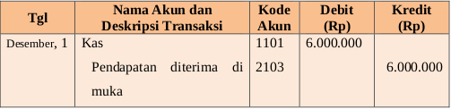
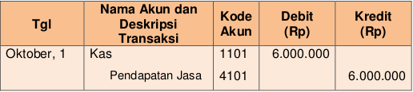

aan telah menerima uang namun belum melakukan pekerjaan (berarti perusahaan seharusnya belum mengakui pendapatan) sehingga uang perusahaan bertambah namun pendapatan diterima di muka (utang pendapatan) juga bertambah akibat perusahaan belum melakukan pekerjaan. Pendapatan diterima di muka dapat dicatat dengan menggunakan dua cara yaitu pendekatan neraca dan pendekatan Laba/rugi.
Jika dicatat menggunakan pendekatan neraca pendapatan diterima di muka dianggap sebagai utang pendapatan namun jika dicatat menggunakan pendekatan laba/rugi pendapatan diterima di muka dianggap sebagai pendapatan.
Perhatikan contoh berikut ini:
Tanggal 1 Oktober 2017 Perusahaan menerima uang dari Tuan Yoga sebagai pembayaran jasa yang akan dilakukan selama 6 bulan kedepan senilai Rp6.000.000,00.
a.Pencatatan menggunakan pendekatan Neraca
b.Pencatatan menggunakan pendekatan Laba/rugi
